Day 1 · Points 🚆
31 Oct 2024
Here’s my first map for the #30DayMapChallenge! The brief is Points.
Focusing on train stations in the Brisbane area, this map shows the total number of train services at each station. It’s designed to reveal disparities in service allocation, emphasising the areas that receive fewer services.
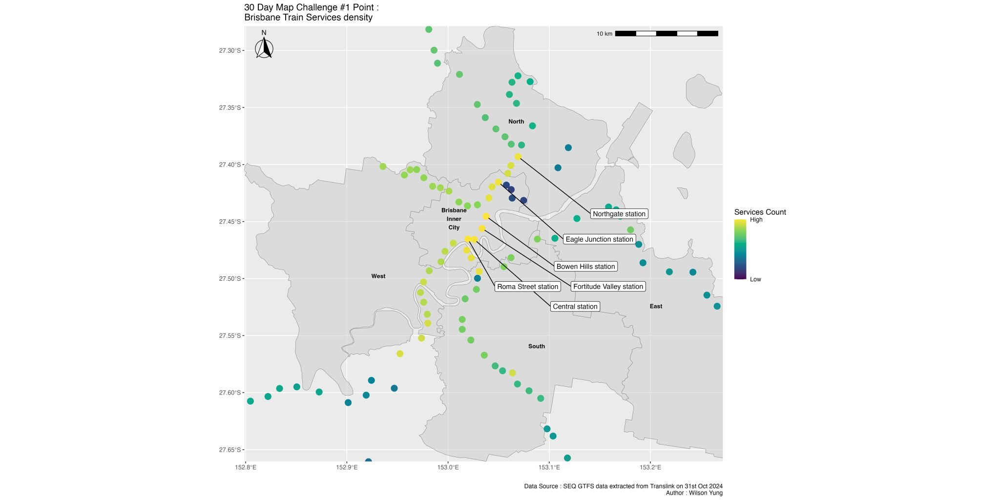
Day 2 · Lines 🚌
1 Nov 2024
For Day 2, with the theme of “Lines”, I mapped Brisbane’s public transport routes to highlight the reach of bus, rail and ferry services across the city.
Seeing these services mapped out gives a clearer understanding of the “as is” transport network. This takes on added significance as Brisbane prepares for major events like the 2032 Olympics and pushes towards Net Zero goals.
As someone living in the west, it’s noticeable how this area misses out on much of Brisbane’s big public transport infrastructure. This map is my way of backing up my personal experience with data. It only shows spatial reach, without factoring in temporal reach (off-peak vs peak), so the real picture might be even more challenging.
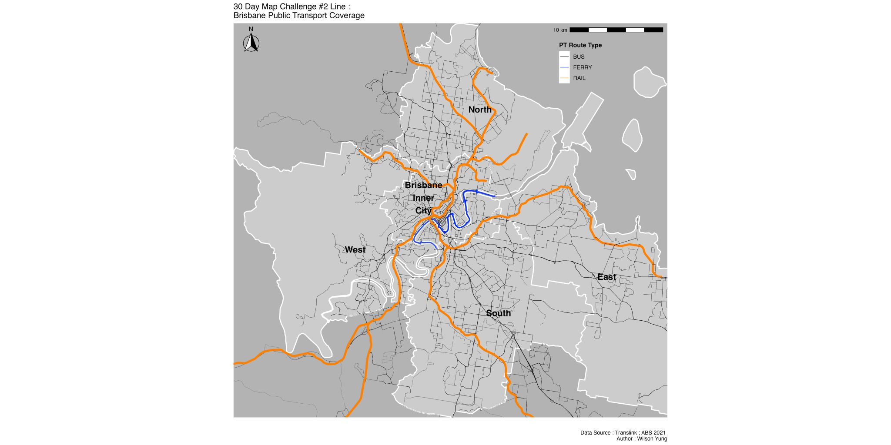
Day 3 · Polygons 👥
1 Nov 2024
Today I focused on population concentrations in the Brisbane area, to better understand the demand for infrastructure and public transport.
The map highlights the top 10 percentile SA2s (Statistical Areas Level 2) for total population within Greater Brisbane. By pinpointing these regions, I want to find where demand for services and infrastructure is likely to grow fastest.
It complements my Day 1 and Day 2 maps on public transport stop services and routes. By understanding where people live and the current reach of public transport, we can plan better for the future.
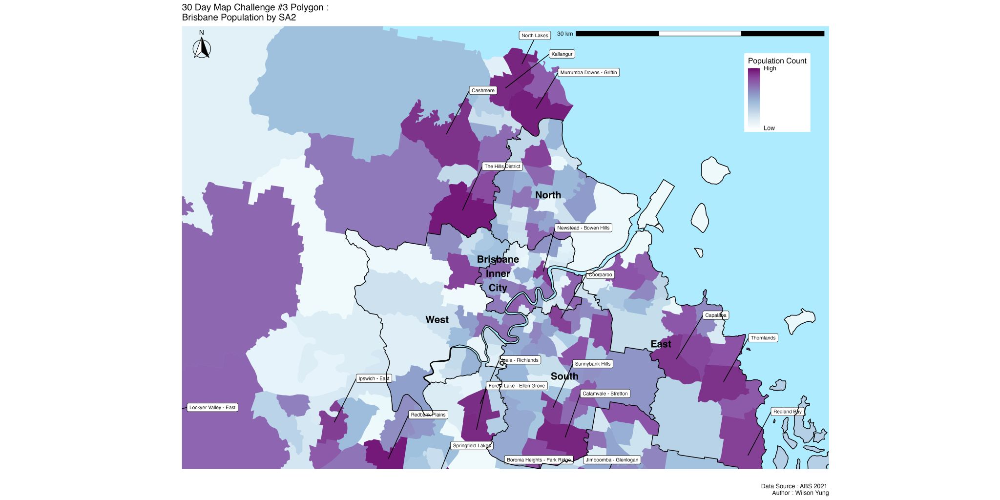
Day 4 · Hexagons 🔷
4 Nov 2024
To be honest, I spent more time than I expected on this hex map! I tried several mapping libraries and chose mapgl for its interactive features. It was rewarding to add touches like highlighting hexagons in red and showing tooltips.
Each hexagon is around 1 km². The data is the 2021 ABS Census Mesh Block dwelling count, associated and aggregated to each hexagon.
Interestingly, dwelling concentrations often follow the train lines, which shows how much transport infrastructure shapes where people live.
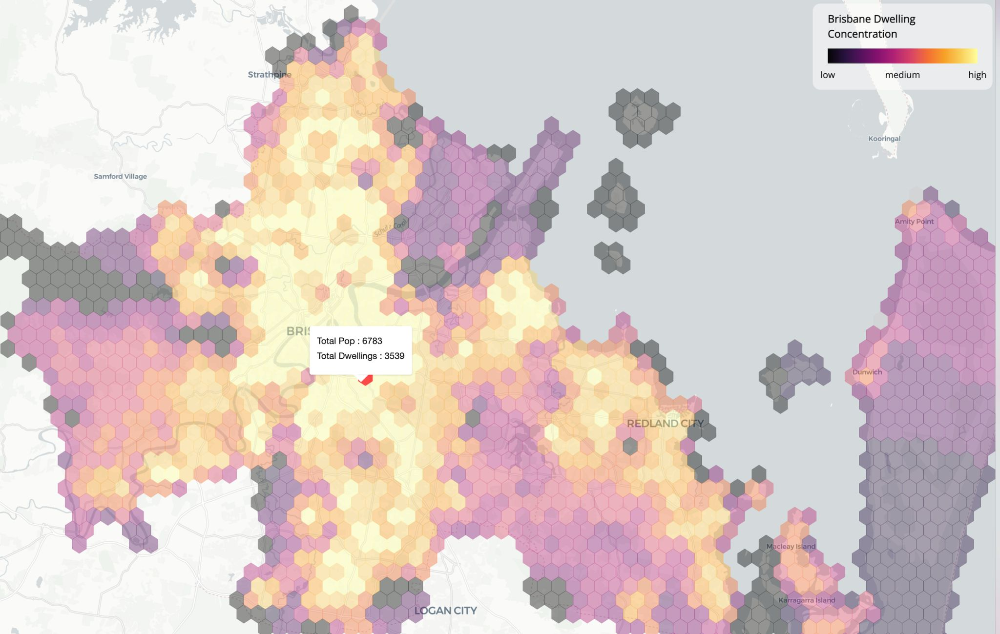
Day 5 · Journey 🚴
5 Nov 2024
I found my first cycling journey in Brisbane, exported from Strava! Using Mapdeck and R, I mapped the route and its elevation changes. Cycling in Brisbane’s western suburbs is clearly a challenge, especially around Toowong, Indooroopilly and Kenmore, where the elevation goes up and down a lot.
This was also my first time parsing GPX data in R. I’d only done it in QGIS before. I’m learning something new every day!
So far I’ve only cycled between Kenmore and Indooroopilly, and between Toowong and Indooroopilly, but I’m keen to explore more of the city. The riverside bikeway is flat, but I need to get over the hills to reach it first. I cycled much more in Sydney, where the terrain and bike paths are quite different.
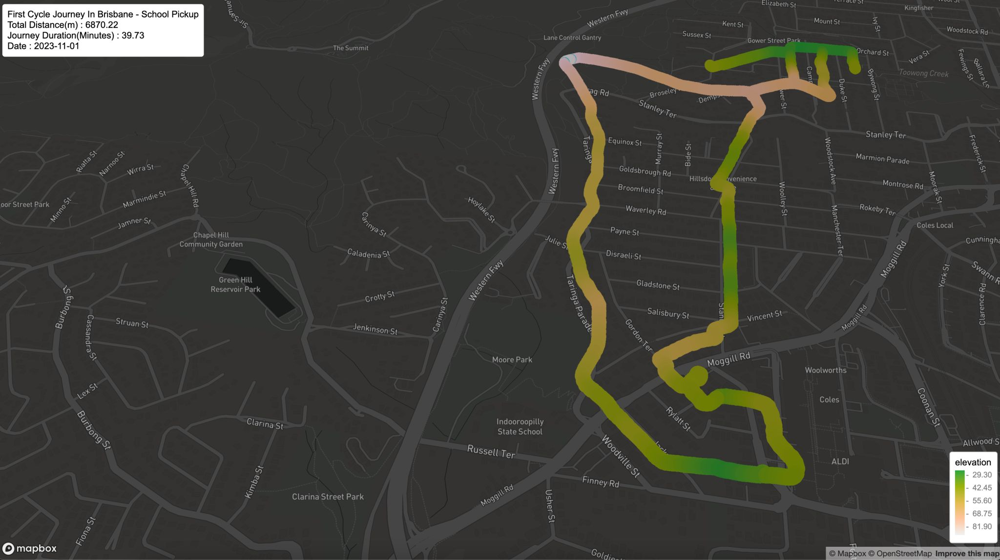
Day 6 · Raster ⛰️
6 Nov 2024
Here’s a hillshade map of Brisbane in summer, with a sun altitude of 45° and azimuth of 270°. The data is Geoscience Australia’s Queensland LiDAR Data – Brisbane 2019 Project, on a 1 m grid.
I used the terra package in R to mosaic and crop the 96 GeoTIFFs. I hit a roadblock trying to render the raster in Mapbox GL, which was a bit disappointing, so I fell back on QGIS. It gave me the flexibility to work with the high-resolution LiDAR and bring out Brisbane’s terrain.
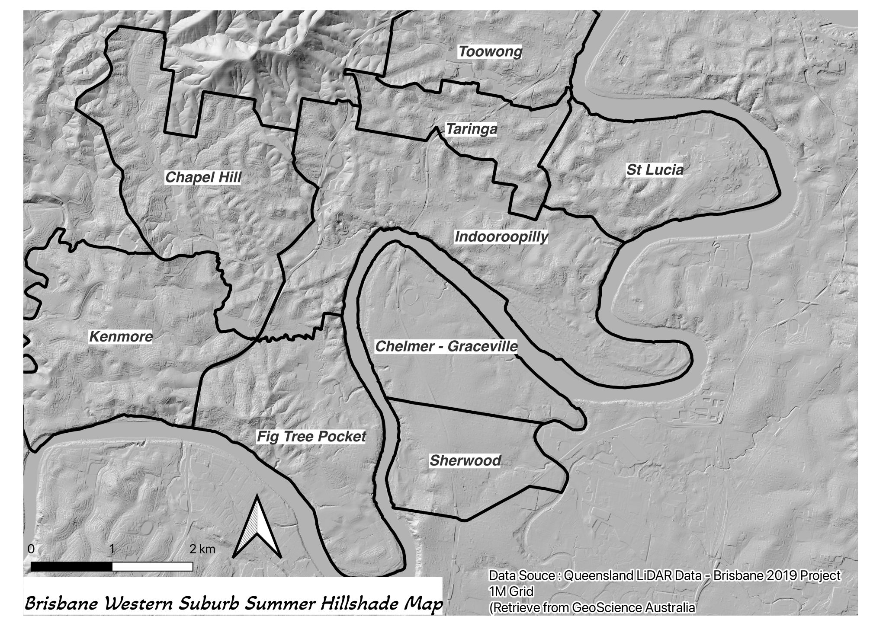
Day 7 · Vintage 📜
7 Nov 2024
Today I stepped out of my comfort zone to make my first vintage-style map, experimenting with textures and colours. It was a challenge, but I’m happy with the result!
Using OpenStreetMap data and the 1 m LiDAR from Day 6, I mapped train service coverage across Brisbane. I called it “Brisbane Rail’s Wild West” to highlight the big gap in rail coverage, especially in the western suburbs. It’s an issue I think is important to show and discuss.
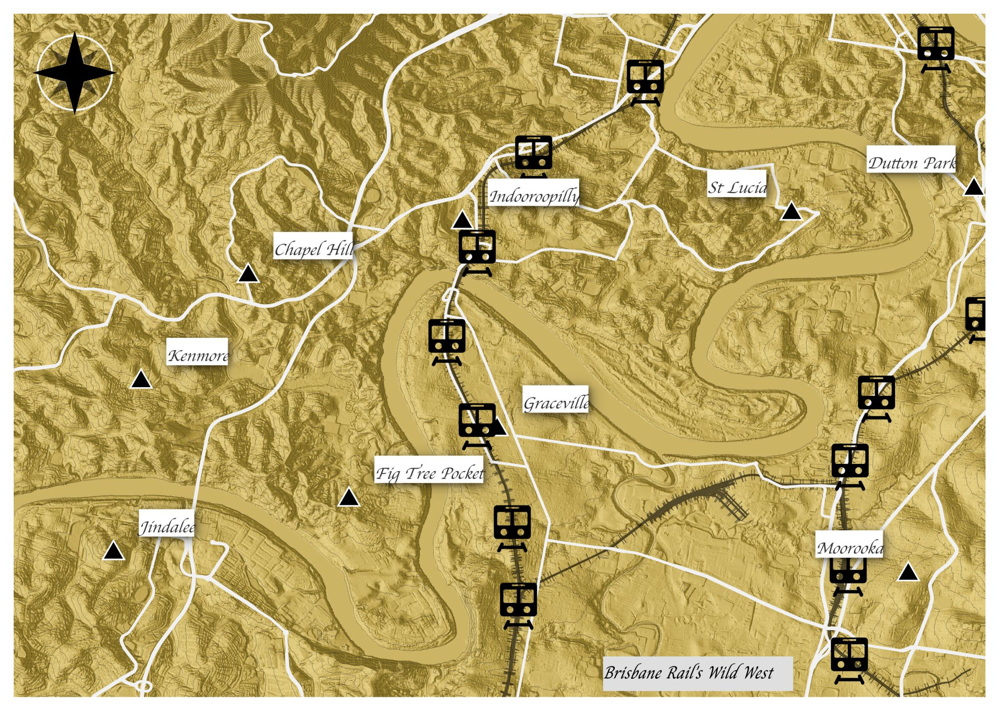
Day 8 · HDX 🌏
8 Nov 2024
I used Meta’s movement data from HDX (the Humanitarian Data Exchange) to map the percentage of people who stayed within 0–10 km of home across Australia and New Zealand. It reminds me of the telco mobility data I used to work with, so I wanted to explore it at a broader scale.
Movement within 10 km says something about local mobility, but what counts as “nearby” depends on geography. Where I live in Brisbane, the CBD is about 10 km away. In Sydney, I’d need to travel 30 km to reach the city centre. Making sense of movement data depends on the question you’re asking and the local context.
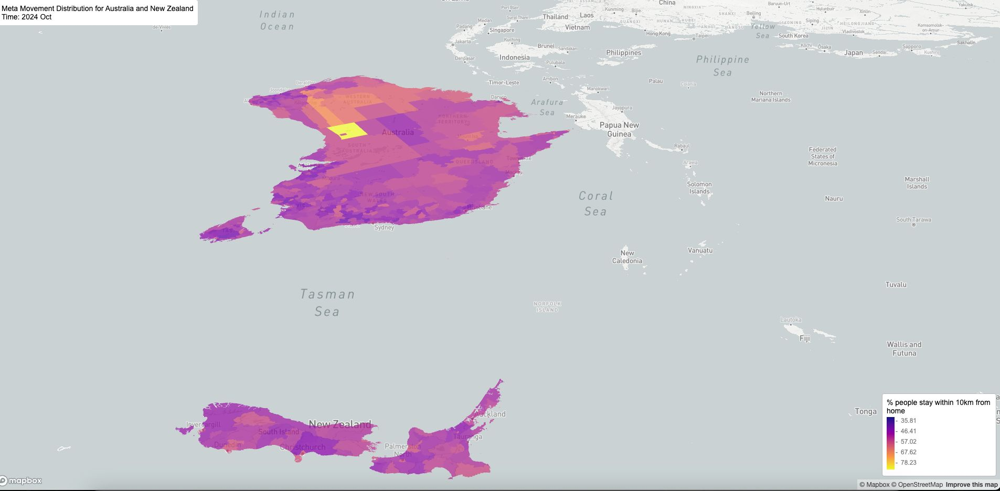
Day 9 · AI only 🤖
9 Nov 2024
I asked ChatGPT to make a map of Australia showing each capital city’s vibe and culture, plus the size of each city’s economy and population. My prompt was: “Can you create an Australia map highlighting the vibes and cultures for each capital city. Also use ways to reflect the size of each city’s economy size and population. Try making it in both ArcGIS and QGIS styles.”
The result? An imaginative Australia where some capital cities ended up in unexpected places, in a unique “blend” of ArcGIS and QGIS styles! It’s fascinating, and sometimes funny, to see how AI interprets geography and cartography. As always, check generated content against your own knowledge and common sense. I was a bit disappointed that it didn’t reflect city population and economy size as asked.
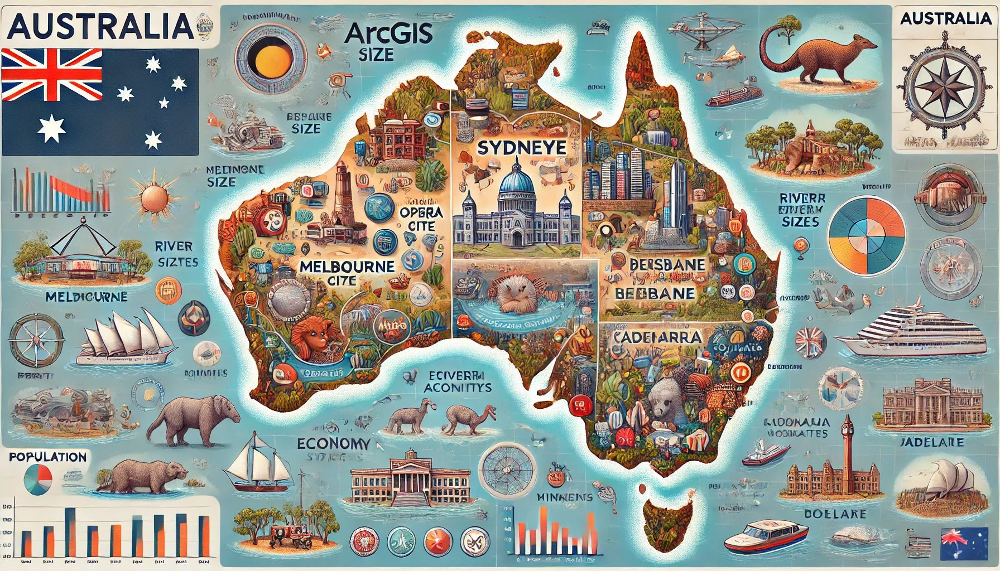
Day 10 · Pen & paper ✏️
10 Nov 2024
I’ve never been good at drawing, but my 6-year-old surprised me with her first map a few days ago, so I wanted to share it. Her sense of aesthetics is already way beyond mine. She even labelled the map in a style that looks like ggrepel, and rotated Australia at a slight angle! I tried to recreate her map in ggplot2, but haven’t managed it yet.
It’s inspiring to see her creativity, and a reminder of how much we can learn from kids’ fresh perspectives.
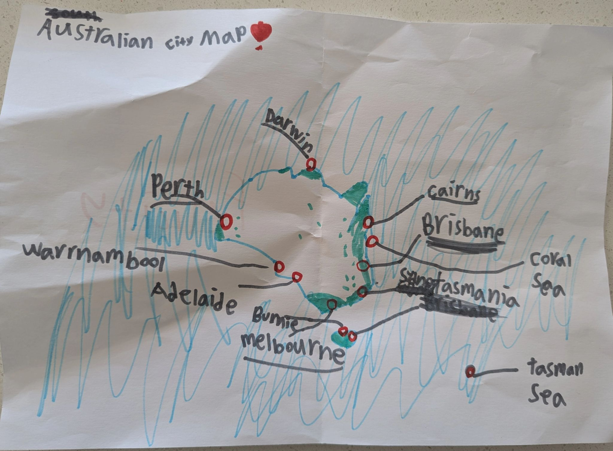
Day 11 · Arctic 🧊
12 Nov 2024
This was my first time working with Arctic data, and I’m still learning about how it’s used and how accurate it is. I made an interactive map with three layers:
- Daily Arctic ice: areas with and without ice (US National Ice Center)
- Arctic maritime boundaries: a subset of global maritime boundaries for the Arctic region
- Arctic DEM: summit elevations in the region
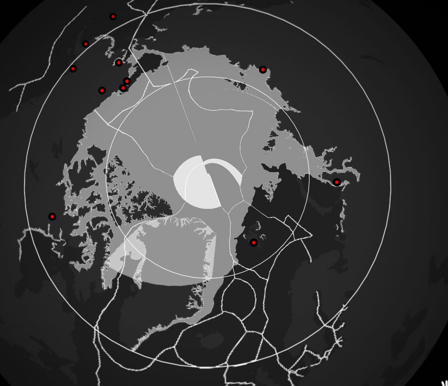
Day 12 · Time & space ⏳
12 Nov 2024
With so much discussion about housing shortages and affordable housing in Australia, I wanted to look at land use change between the 2016 and 2021 Censuses. The map compares Residential and Parkland land use at Mesh Block level, using ABS 2016 and 2021 Mesh Blocks, across the Greater Capital Cities. Zooming into growth areas such as Sydney’s north-west shows the change even more clearly.
Key findings:
- Sydney and Melbourne lead residential land use expansion, with a 15–17% increase since 2016.
- Parkland land use has stayed relatively stable in total area.
This was my first try at a comparison slider, built in R with Mapbox GL, which is a great way to show land use change. The data for all capital cities was too large to host, so the interactive map covers Brisbane only. You can use my code to produce all the capital cities.
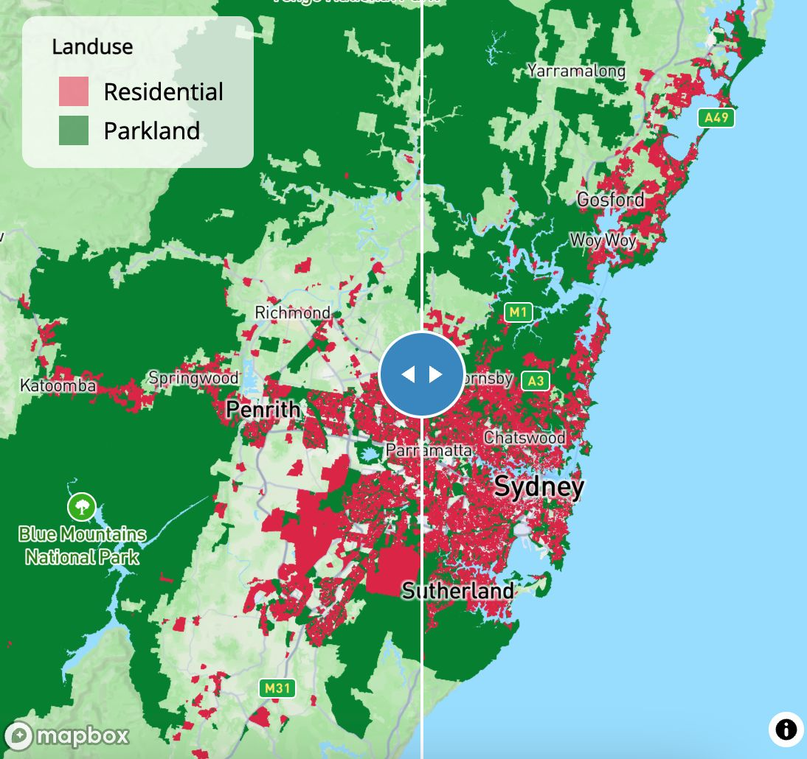
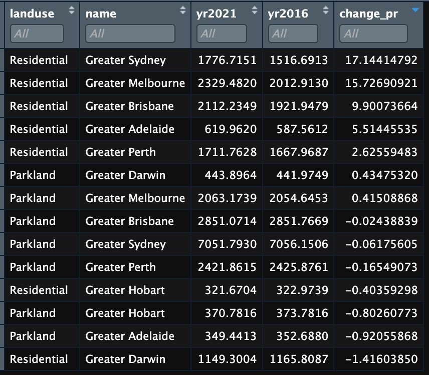
Day 13 · A new tool 🧰
14 Nov 2024
I came across Atlas.co in a post by Fredrik Moger and decided to give it a try. In just 5–10 minutes I made this bus stop walk catchment map, showing 5- and 10-minute walking zones, with data pulled straight from OpenStreetMap.
Its integration with OpenStreetMap and DEM data makes it easy to build datasets for suitability analysis. It’s a promising tool for no-code spatial analysis and map collaboration. The catchment colours looked a little different on export than in the data view, but that’s minor. The export layout is impressive: it adds a mini map, legend and scale bar automatically. Auto-attributing the data sources would make it even better. I’m curious how it performs on larger datasets, and what the architecture behind it looks like.
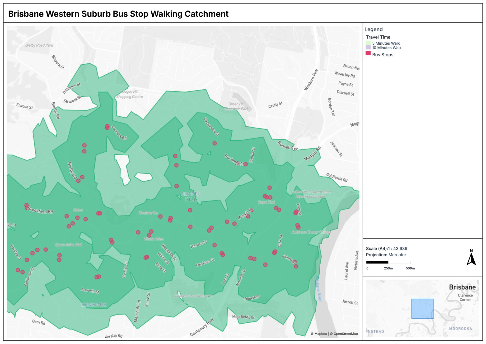
Day 14 · A world map 🌊
15 Nov 2024
For this one I stepped away from R and QGIS. Inspired by Milan Janosov’s tutorial, I used Python in a notebook, with a little help from ChatGPT.
The data is NOAA’s WOA23 (World Ocean Atlas 2023), showing the mean sea surface temperature on a ¼° grid for 2015–2022. I didn’t draw the continents, but you can still see the outline of the world.
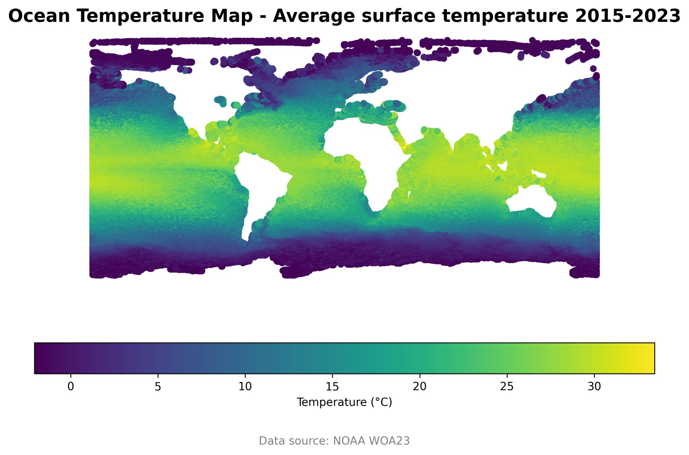
Day 15 · My data 🚙
16 Nov 2024
I’m a bit behind, but here’s Day 15! I went back to GPS traces I collected with my HTC phone on several epic field trips at the end of 2013 and the start of 2014. With the phone powered in the car, it ran all day and collected an incredible 660,000 GPS records.
Those field trips are among the most unforgettable experiences of my life. I explored vast stretches of rural NSW and the ACT, including the Murrumbidgee Irrigation Area, the Snowy River and the Snowy Mountains, a real highlight of my time in Australia. I still remember pulling over to admire the scenery, and passing drivers kindly stopping to check I was okay.
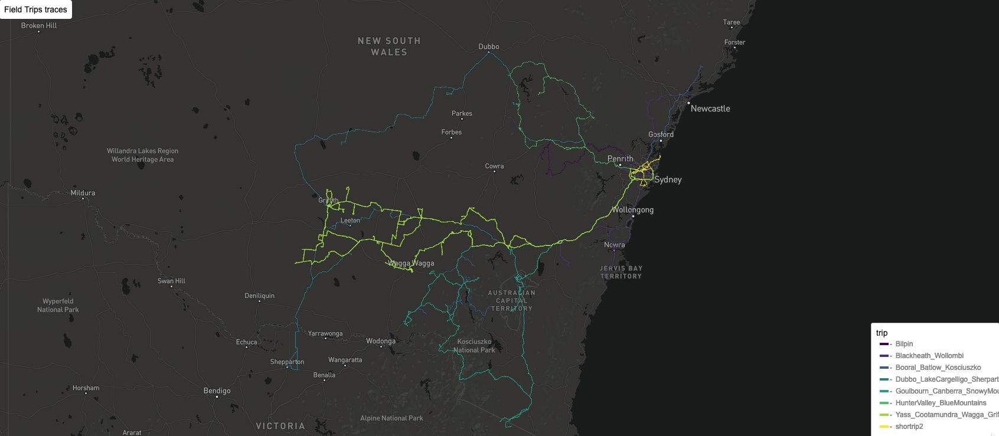
Some quick stats from the trips:
- 📍 Distance travelled: 12,801 km over 43 days of fieldwork
- 📍 Elevation range: 7.7 m to 1,149 m
- 📍 Trips: 8 major overnight trips and several day trips
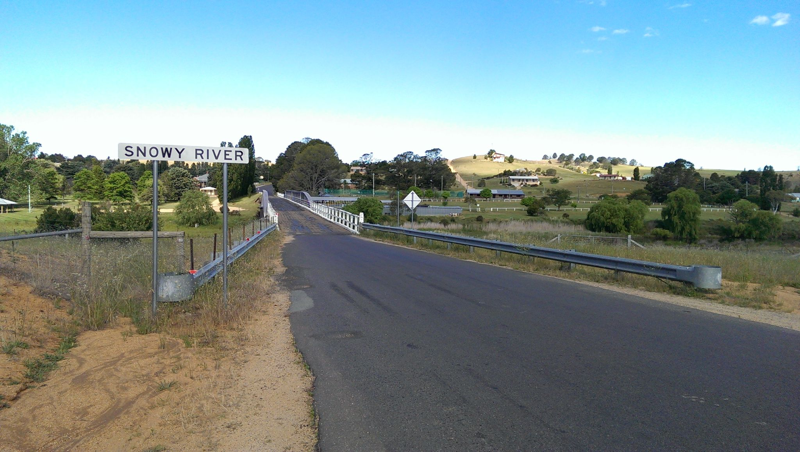
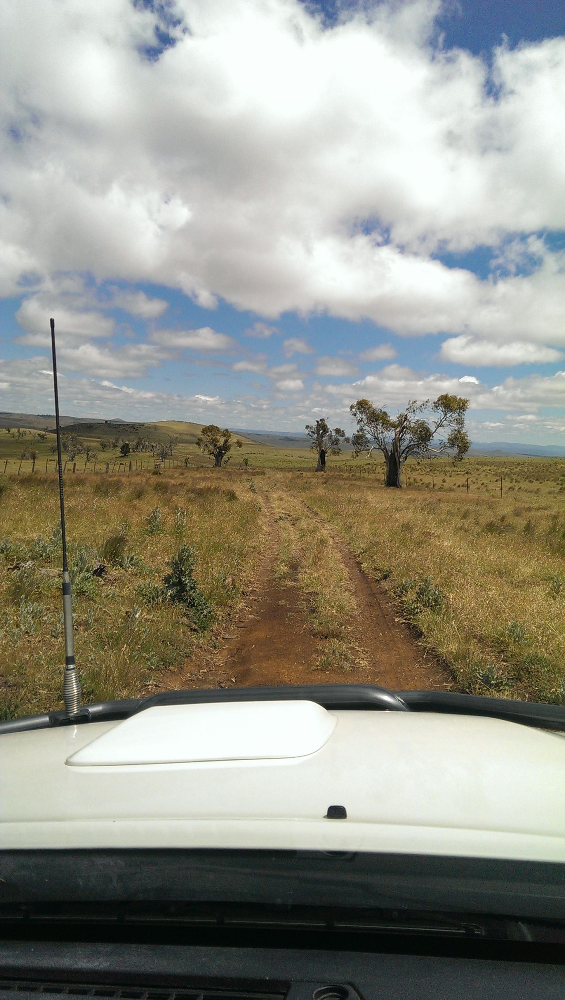
Day 16 · Choropleth 🗺️
18 Nov 2024
Today I explored the 2021 SEIFA data to map socio-economic advantage and disadvantage across SA1s in Greater Brisbane. The map focuses on Brisbane, but the code can produce SA1-level results for all of Australia.
I also took the top 20 (most advantaged) and bottom 20 (most disadvantaged) SA1s nationwide on the Index of Relative Socio-economic Advantage and Disadvantage (IRSAD), and grouped them by Greater Capital City to compare the population in “well-off” and “disadvantaged” areas.
- The ACT has by far the highest share of advantaged areas.
- Most capital cities have more advantaged than disadvantaged areas, except Adelaide and Hobart, where the balance tips the other way.
- In regional areas, disadvantaged populations consistently outnumber advantaged ones.
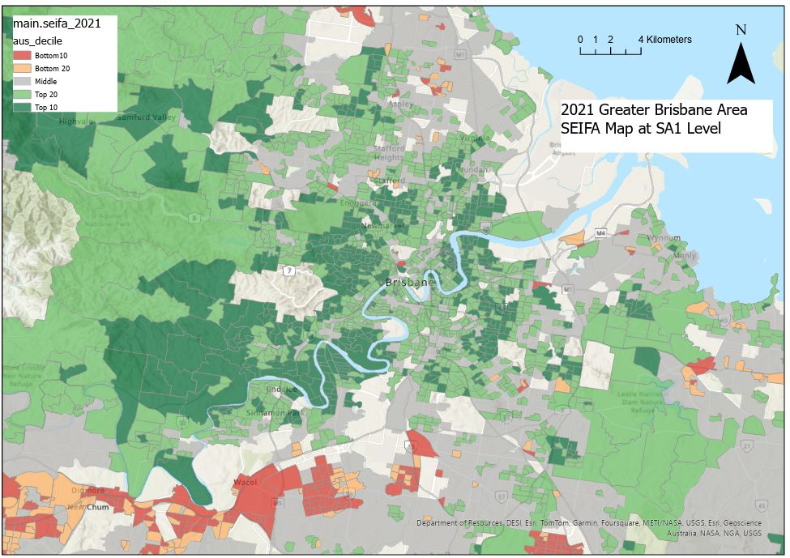
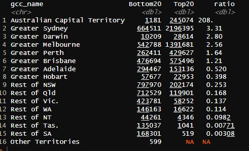
Day 18 · 3D 🏙️
26 Nov 2024
I reused the GTFS data from Day 1 and turned it into a 3D view of bus stop service density. Zoom out to explore Greater Brisbane, including the Gold Coast. Bar height and colour both show the number of services.
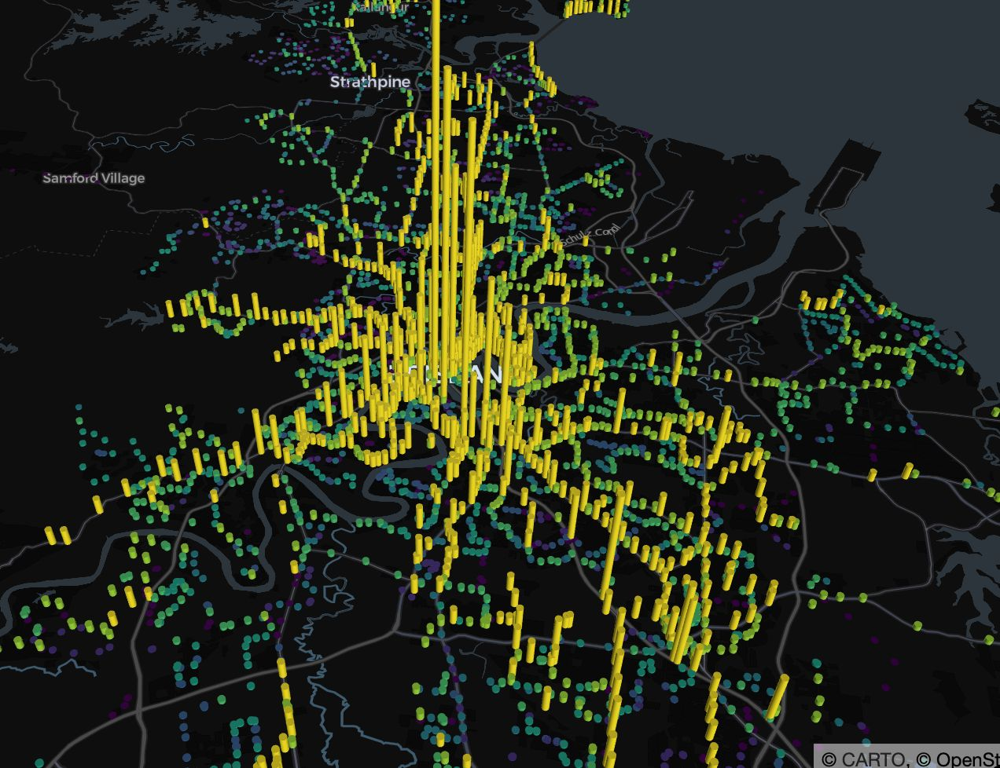
Day 24 · Only circular shapes ⭕
24 Nov 2024
For this one I mapped something practical: public toilets across Brisbane, from OpenStreetMap. As someone who often needs to find one, it felt like a meaningful and fun project!
It was also my first time using Mapbox’s clustering, and I was impressed by how intuitive and useful it is for dense datasets. Even simple everyday data can be presented in creative and useful ways.
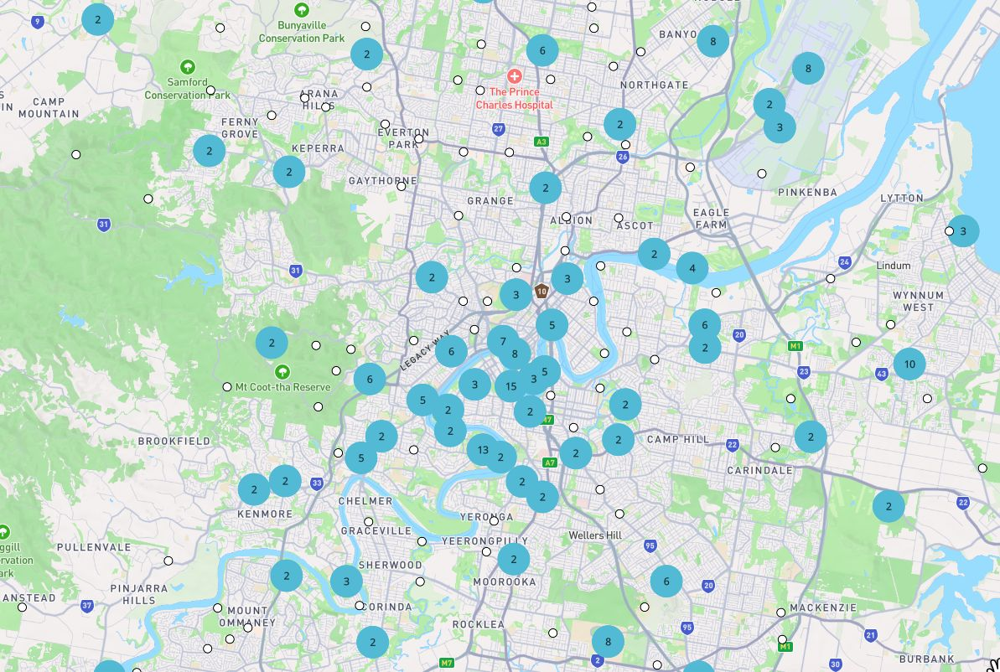
Day 26 · Projection 🌐
26 Nov 2024
Today I mapped Australia in two coordinate reference systems: EPSG:3112 (GDA94 / Geoscience Australia Lambert) and EPSG:4326 (WGS84). I used to rely on EPSG:3112 for planar distances within Australia, but calculating great-circle distances has become much simpler and more common.
The map shows the distortion between a local projection (GDA94) and a global one (WGS84).
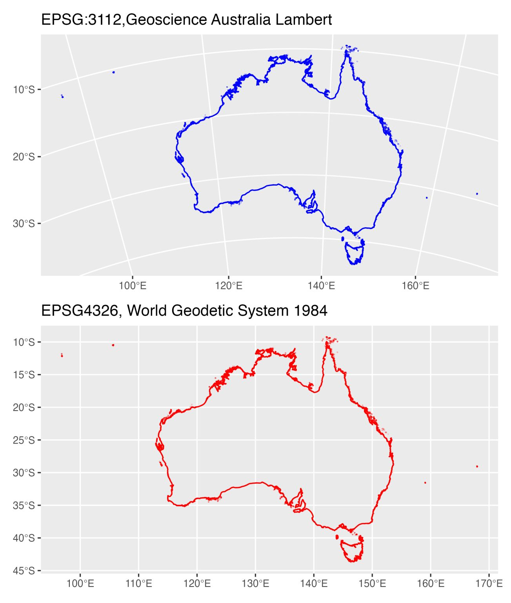
Day 29 · Overture Maps 🏢
1 Dec 2024
This was my first time using Overture Maps. I thought I could use Spark to access and work with the data directly, but ran into issues, so I used the Python command line to download data clipped to a bounding box instead.
I mapped building heights in the Greater Taipei area. I got to know these places in my first two years of work after moving on from social services, especially Tamsui, a satellite city of Taipei.
The map was made in R with Mapdeck. I only just realised Mapdeck uses deck.gl under the hood, which makes efficient 3D rendering much easier.
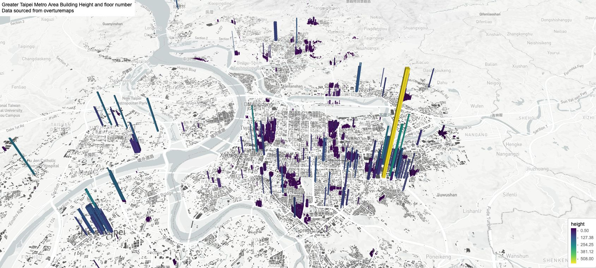
Reflection 💭
4 Dec 2024
This was my first year in the #30DayMapChallenge, and I gave it my best shot! I focused on making my code, data sources and maps reproducible on GitHub. I didn’t complete all 30 days, but I’m proud to have finished 20 maps. Here are my key takeaways.
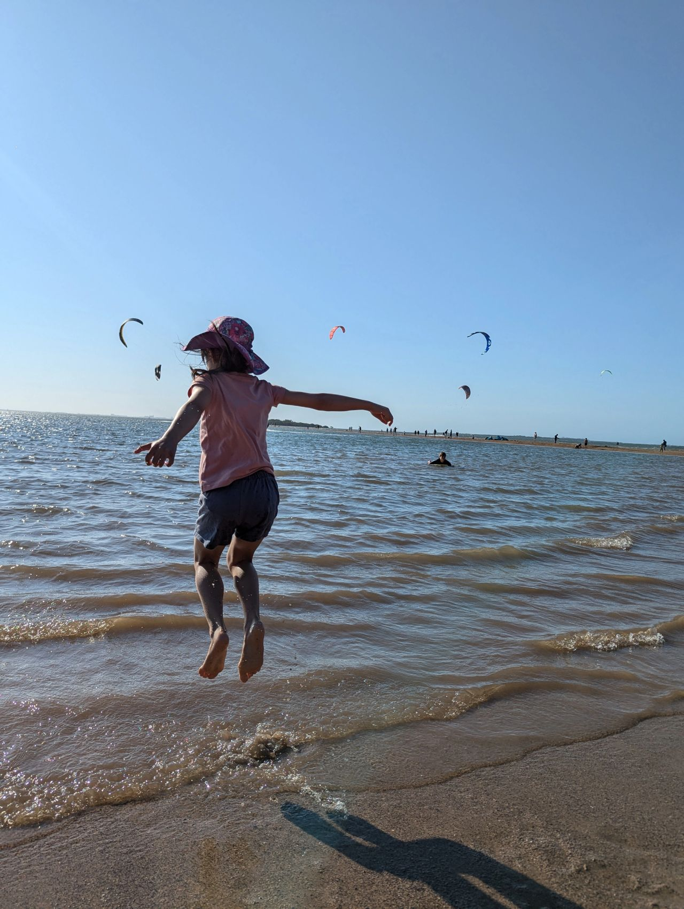
Building a personal website
I learned how to build a personal website with GitHub Pages. GitHub has a 100 MB limit per file, so I’ve had to keep the content lightweight and strategic.
Diverse data sources
I worked with GTFS, ABS, OSM, Strava, GPS traces, LiDAR, HDX movement data, Arctic DEM, WOA and Overture Maps. Using Arctic DEM, WOA and Overture Maps for the first time added new ingredients I can use in the future.
Tools and techniques
I used R, Python, ArcGIS Pro, QGIS, deck.gl and Mapbox. The challenge improved my ability to make interactive maps that are both functional and good-looking, and taught me how to fine-tune the aesthetics.
Themes
My maps covered public transport, population, dwellings, building heights, land use, walk catchments, field trips and temperature.
Beyond the map
The real effort went beyond making maps. It meant:
- Building and refining the idea
- Sourcing data to support it
- Choosing the tools and workflow to bring it together
- Publishing reproducible code to share the process
I was often indecisive and tried several tools before landing on the one that fit the topic best. And sometimes I stuck too closely to the brief. Next time, I want to think more creatively and look for different angles.
A big thank you to everyone who engaged with my maps and gave feedback! I was blown away by so many great maps in the challenge, such as Maayke Leenstra’s river REM map (I’m definitely inspired to make one) and Glenn Kong’s Taiwanese restaurant map. Special thanks to Milan Janosov, Milos Popovic and Kyle Walker for generously sharing their code and knowledge. Their work has been a constant source of inspiration and practical guidance.
Here’s to the many maps still waiting to be made. Cheers to the journey and the community!
Every interactive map from 2024 is listed in my full portfolio, and the code is on GitHub. My later challenges have their own articles: 2025 and 2026.